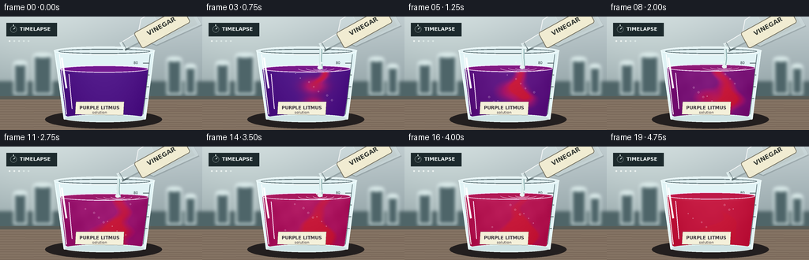
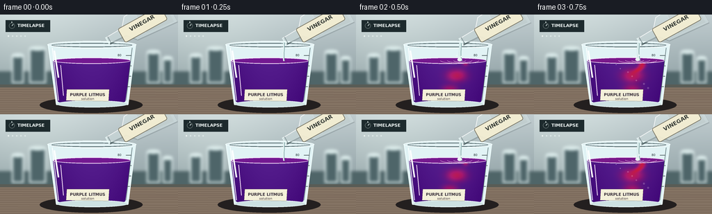

CODING AGENTS AS PIXEL WORLD MODELS
traex/GPT-5.6-Sol · phygen_146
点击播放 · 原生 RGB 像素
逐轮保存的候选
回放视频、检查图与代码变化。
每份候选均可单独播放。实际图片检查记录在下方工具轨迹中。
候选 01播放与检查图
点击播放 · 原生 RGB 像素


展开代码变化
--- 上一保存版本
+++ 本次保存版本
@@ -0,0 +1,208 @@
+from pathlib import Path
+import math
+import numpy as np
+from PIL import Image, ImageDraw, ImageFont, ImageFilter
+import artifact_io
+
+W,H,N,S = 256,144,20,4
+SZ=(W*S,H*S)
+ROOT=Path(__file__).resolve().parent
+
+def font(size,bold=False):
+ p='/usr/share/fonts/truetype/dejavu/DejaVuSans-Bold.ttf' if bold else '/usr/share/fonts/truetype/dejavu/DejaVuSans.ttf'
+ return ImageFont.truetype(p,size*S)
+
+def scpt(p): return tuple(int(round(v*S)) for v in p)
+def poly(draw, pts, **kw): draw.polygon([scpt(p) for p in pts], **kw)
+def ell(draw, box, **kw): draw.ellipse(scpt(box), **kw)
+def line(draw, pts, width=1, **kw): draw.line([scpt(p) for p in pts], width=max(1,int(width*S)), **kw)
+def rect(draw, box, **kw): draw.rectangle(scpt(box), **kw)
+
+def make_background():
+ yy=np.arange(H*S)[:,None]
+ xx=np.arange(W*S)[None,:]
+ # cool gray laboratory wall, softly lit from the left
+ top=np.array([192,204,207.],float); bot=np.array([143,160,164.],float)
+ u=np.clip(yy/(105*S),0,1)[...,None]
+ arr=top*(1-u)+bot*u
+ arr=np.broadcast_to(arr,(H*S,W*S,3)).copy()
+ glow=np.exp(-((xx-54*S)/(100*S))**2-((yy-30*S)/(85*S))**2)[...,None]
+ arr += glow*np.array([18,18,15])
+ arr=np.clip(arr,0,255).astype('uint8')
+ im=Image.fromarray(arr,'RGB').convert('RGBA')
+ d=ImageDraw.Draw(im,'RGBA')
+ # blurred laboratory glassware silhouettes in background
+ rect(d,(0,82,256,106),fill=(79,101,104,38))
+ for x,w,h in [(17,17,35),(42,24,45),(211,19,40),(234,14,31)]:
+ rect(d,(x,94-h,x+w,99),fill=(78,101,105,30),outline=(230,244,244,40),width=2*S)
+ ell(d,(x,91-h,x+w,97-h),fill=(216,233,232,25),outline=(235,249,249,35),width=S)
+ im=im.filter(ImageFilter.GaussianBlur(2.1*S))
+ d=ImageDraw.Draw(im,'RGBA')
+ # bench and back edge
+ rect(d,(0,101,256,144),fill=(132,115,99,255))
+ rect(d,(0,101,256,105),fill=(89,92,86,120))
+ # wood/stone grain
+ for k in range(12):
+ y=108+k*3.2
+ line(d,[(0,y),(256,y+1.2*math.sin(k))],width=.45,fill=(91,72,62,32))
+ # cast shadow
+ ell(d,(57,119,205,142),fill=(35,31,31,64))
+ return im
+
+BG=make_background()
+
+def bottle_layer(i):
+ """Tilted clear vinegar bottle at upper right, mouth aimed into beaker."""
+ lay=Image.new('RGBA',SZ,(0,0,0,0)); d=ImageDraw.Draw(lay,'RGBA')
+ # slight approach/withdrawal while keeping pour readable
+ if i<2: off=(2-i)*1.8
+ elif i>16: off=(i-16)*1.2
+ else: off=0
+ mx,my=151+off,39-off*.35
+ a=np.array([.874,-.486]); p=np.array([.486,.874])
+ m=np.array([mx,my]); n=m+a*27; sh=m+a*38; end=m+a*101
+ pts=[m-p*4.8,m+p*4.8,n+p*5.5,sh+p*19,end+p*24,end-p*24,sh-p*19,n-p*5.5]
+ # shadow and glass body
+ poly(d,[tuple(q+np.array([1.2,1.5])) for q in pts],fill=(35,49,52,42))
+ poly(d,[tuple(q) for q in pts],fill=(226,241,240,75),outline=(244,255,255,190))
+ line(d,[tuple(m-p*5),tuple(n-p*6),tuple(sh-p*19),tuple(end-p*24)],width=1.15,fill=(255,255,255,205))
+ line(d,[tuple(m+p*5),tuple(n+p*6),tuple(sh+p*19)],width=.8,fill=(77,104,106,100))
+ # lip rings
+ line(d,[tuple(m-p*6),tuple(m+p*6)],width=2.2,fill=(235,250,249,190))
+ line(d,[tuple(m+a*3-p*5.2),tuple(m+a*3+p*5.2)],width=1,fill=(78,99,102,115))
+ # colorless vinegar visible through bottle as neutral watery lens
+ q1=sh+a*16; q2=end-a*4
+ fluid=[q1+p*17,q2+p*22,q2-p*22,q1-p*17]
+ poly(d,[tuple(q) for q in fluid],fill=(222,235,224,45))
+ line(d,[tuple(q1+p*17),tuple(q1-p*17)],width=.7,fill=(255,255,255,105))
+ # label aligned approximately with bottle axis
+ lab=Image.new('RGBA',(72*S,25*S),(0,0,0,0)); ld=ImageDraw.Draw(lab,'RGBA')
+ ld.rounded_rectangle((1*S,1*S,71*S,24*S),radius=3*S,fill=(244,239,211,235),outline=(100,91,67,180),width=S)
+ ld.text((36*S,5.8*S),'VINEGAR',font=font(8,True),anchor='ma',fill=(58,62,56,255),stroke_width=0)
+ lab=lab.rotate(29,resample=Image.Resampling.BICUBIC,expand=True)
+ lay.alpha_composite(lab,(int(205*S-lab.width/2),int(14*S-lab.height/2)))
+ return lay,(mx,my)
+
+def draw_liquid(base,i,surface_y):
+ # inner fluid clip
+ mask=Image.new('L',SZ,0); md=ImageDraw.Draw(mask)
+ pts=[(76,surface_y),(188,surface_y),(180,125),(83,125)]
+ poly(md,pts,fill=245)
+ ell(md,(76,surface_y-4,188,surface_y+5),fill=250)
+ ell(md,(83,120,180,130),fill=245)
+ y,x=np.mgrid[0:H*S,0:W*S]; xf=x/S; yf=y/S
+ p=np.clip((i-1.5)/17.5,0,1)
+ # overall reaction proceeds with accelerated timelapse kinetics
+ global_a=np.clip((p-.10)/.90,0,1)**1.08*.94
+ acid=np.full_like(xf,global_a,dtype=float)
+ if i>=2:
+ depth=np.clip((i-1.5)/6.0,0,1)
+ front=surface_y+depth*67
+ path=149 + 7*np.sin((yf-surface_y)/9.5+i*.55) + 2*np.sin((yf-surface_y)/3.8-i*.35)
+ width=3.0+14*p+0.10*np.maximum(yf-surface_y,0)
+ plume=np.exp(-((xf-path)/width)**2)
+ plume*=1/(1+np.exp((yf-front)/1.8))
+ plume*=1/(1+np.exp((surface_y-2-yf)/1.2))
+ # curling lobes carried around the beaker
+ cx=146-22*np.sin(p*math.pi*.75); cy=88+31*np.clip((i-3)/10,0,1)
+ swirl=np.exp(-(((xf-cx)/(13+22*p))**2+((yf-cy)/(8+15*p))**2))
+ cx2=132+30*np.sin(p*math.pi*1.1); cy2=108
+ swirl2=np.exp(-(((xf-cx2)/(10+24*p))**2+((yf-cy2)/(6+11*p))**2))
+ acid=np.maximum(acid,np.clip(.88*plume+.72*swirl+.5*swirl2,0,1))
+ acid=np.clip(acid,0,1)
+ # purple -> vivid magenta -> acidic litmus red
+ c0=np.array([83,25,139.]); c1=np.array([170,24,112.]); c2=np.array([205,27,61.])
+ q=np.clip(acid*2,0,1)[...,None]; r=np.clip((acid-.5)*2,0,1)[...,None]
+ col=c0*(1-q)+c1*q
+ col=col*(1-r)+c2*r
+ # curved mixing filaments and optical depth variation
+ filament=np.sin(xf*.15+yf*.22-i*.62)+.55*np.sin(xf*.32-yf*.13+i*.37)
+ filament*= (acid*(1-acid))*8
+ depthshade=np.clip((yf-surface_y)/62,0,1)*(-11)
+ edge=-15*np.clip(np.abs(xf-132)/57,0,1)**2
+ col += (filament+depthshade+edge)[...,None]
+ # surface light reflection
+ col += (7*np.exp(-((yf-surface_y)/5)**2))[...,None]
+ alpha=np.array(mask,dtype=np.float32)[...,None]/255
+ rgba=np.concatenate([np.clip(col,0,255).astype(np.uint8),np.clip(alpha*230,0,255).astype(np.uint8)],axis=2)
+ base.alpha_composite(Image.fromarray(rgba,'RGBA'))
+ d=ImageDraw.Draw(base,'RGBA')
+ # Meniscus and moving ripples around impact point
+ ell(d,(76,surface_y-4,188,surface_y+5),fill=(115+int(75*p),25,145-int(73*p),155),outline=(245,222,249,120),width=S)
+ if 2<=i<=17:
+ amp=max(0.3,1.5-abs(i%4-2)*.3)
+ for rad,al in [(9,120),(18,70),(28,38)]:
+ box=(149-rad,surface_y-amp-rad*.12,149+rad,surface_y+amp+rad*.12)
+ # front arcs suggest concentric surface waves
+ d.arc(scpt(box),8,172,fill=(246,215,239,al),width=max(1,S//2))
+ # specular band visible through the liquid
+ line(d,[(87,surface_y+7),(91,117)],width=1.1,fill=(255,235,255,76))
+
+def render(i):
+ im=BG.copy()
+ d=ImageDraw.Draw(im,'RGBA')
+ # unobtrusive time-lapse badge
+ rect(d,(8,8,72,25),fill=(29,42,45,145))
+ ell(d,(13,12,21,20),outline=(230,243,240,220),width=1)
+ line(d,[(17,12),(17,10)],width=1,fill=(230,243,240,220))
+ line(d,[(17,16),(19,14)],width=1,fill=(230,243,240,220))
+ d.text(scpt((25,12.0)),'TIMELAPSE',font=font(6.2,True),fill=(240,247,246,230))
+ # beaker rear glass silhouette before liquid
+ poly(d,[(69,43),(195,43),(184,130),(81,130)],fill=(225,243,245,27),outline=(227,246,247,150))
+ ell(d,(68,38,196,49),fill=(226,241,243,35),outline=(245,255,255,210),width=S)
+ ell(d,(74,41,190,47),outline=(69,91,95,95),width=S)
+ # graduation marks behind fluid
+ for y in [59,74,89,104]:
+ line(d,[(181,y),(189,y)],width=.75,fill=(52,67,72,110))
+ d.text(scpt((169,56)),'80',font=font(4.5),fill=(52,67,72,105))
+ surface=66-4.0*np.clip((i-2)/15,0,1)
+ draw_liquid(im,i,surface)
+ d=ImageDraw.Draw(im,'RGBA')
+ # front wall / glass boundaries and highlights
+ line(d,[(69,43),(81,130),(184,130),(195,43)],width=1.25,fill=(239,253,253,180))
+ line(d,[(75,48),(84,124)],width=1.0,fill=(255,255,255,165))
+ line(d,[(78,52),(84,91)],width=2.4,fill=(255,255,255,42))
+ line(d,[(190,48),(181,124)],width=.75,fill=(84,105,109,100))
+ ell(d,(81,124,184,134),fill=(205,225,226,28),outline=(232,247,247,135),width=S)
+ # taped identification label
+ poly(d,[(96,108),(157,108),(156,125),(95,124)],fill=(244,240,218,218),outline=(113,106,89,145))
+ d.text(scpt((126,112.2)),'PURPLE LITMUS',font=font(5.7,True),anchor='ma',fill=(56,47,57,245))
+ d.text(scpt((126,118.7)),'solution',font=font(4.7),anchor='ma',fill=(77,67,73,230))
+ # bottle (behind stream, in front of scene)
+ bl,mouth=bottle_layer(i); im.alpha_composite(bl)
+ d=ImageDraw.Draw(im,'RGBA')
+ # Colorless vinegar stream, with narrowing start/end and glints
+ if 1<=i<=17:
+ if i==1: strength=.32
+ elif i==17: strength=.38
+ else: strength=1.0
+ mx,my=mouth
+ pts=[]
+ for k in range(12):
+ u=k/11
+ pts.append((mx-1+(.7*math.sin(i*.7+k*.55))*u, my+2+(surface-my-1)*u))
+ line(d,pts,width=3.2*strength+1,fill=(207,231,230,int(125*strength+45)))
+ line(d,[(x-.7,y) for x,y in pts],width=.65,fill=(255,255,255,int(205*strength)))
+ line(d,[(x+1.1,y) for x,y in pts],width=.55,fill=(91,129,131,int(100*strength)))
+ # splash crown and clear droplets
+ if i>=2:
+ ell(d,(145.8,surface-3.2,151.8,surface+1.2),fill=(234,242,241,115))
+ for k in range(3):
+ bx=143+5*k+2*math.sin(i+k); by=surface-3-abs(math.sin(i*.9+k))*4
+ ell(d,(bx-1,by-1,bx+1,by+1),fill=(236,248,246,140))
+ # reaction microbubbles / mixing flecks (contained in fluid)
+ if i>=3:
+ for k in range(9):
+ bx=103+((k*23+i*3)%63); by=72+((k*17-i*2)%45)
+ if bx < 184-(by-65)*.09:
+ rr=.45+(k%3)*.25
+ ell(d,(bx-rr,by-rr,bx+rr,by+rr),outline=(247,219,237,70),width=1)
+ # time marker dots, emphasizing compressed time
+ for k in range(5):
+ fill=(238,244,242,210) if k<=int(i/4) else (220,232,230,65)
+ ell(d,(11+k*6,30,13+k*6,32),fill=fill)
+ return np.asarray(im.convert('RGB').resize((W,H),Image.Resampling.LANCZOS),dtype=np.uint8)
+
+frames=np.stack([render(i) for i in range(N)],axis=0)
+artifact_io.save(frames,ROOT)
+print(frames.shape,frames.dtype)
可观测工具轨迹
实际执行的命令与返回图片。
命令 1exit 0
/bin/bash -lc "cat prompt.txt && printf '\\n---RULES---\\n' && cat GENERATION_RULES.md && printf '\\n---SPEC---\\n' && cat task_spec.json"
命令 2exit 0
/bin/bash -lc "find . -maxdepth 2 -type f -printf '%p\\n' | sort"
命令 3exit 0
/bin/bash -lc 'cat artifact_io.py'
命令 4exit 0
/bin/bash -lc "cat > generate.py <<'PY'
from pathlib import Path
import math
import numpy as np
from PIL import Image, ImageDraw, ImageFont, ImageFilter
import artifact_io
W,H,N,S = 256,144,20,4
SZ=(W*S,H*S)
ROOT=Path(__file__).resolve().parent
def font(size,bold=False):
p='/usr/share/fonts/truetype/dejavu/DejaVuSans-Bold.ttf' if bold else '/usr/share/fonts/truetype/dejavu/DejaVuSans.ttf'
return ImageFont.truetype(p,size*S)
def scpt(p): return tuple(int(round(v*S)) for v in p)
def poly(draw, pts, **kw): draw.polygon([scpt(p) for p in pts], **kw)
def ell(draw, box, **kw): draw.ellipse(scpt(box), **kw)
def line(draw, pts, width=1, **kw): draw.line([scpt(p) for p in pts], width=max(1,int(width*S)), **kw)
def rect(draw, box, **kw): draw.rectangle(scpt(box), **kw)
def make_background():
yy=np.arange(H*S)[:,None]
xx=np.arange(W*S)[None,:]
# cool gray laboratory wall, softly lit from the left
top=np.array([192,204,207.],float); bot=np.array([143,160,164.],float)
u=np.clip(yy/(105*S),0,1)[...,None]
arr=top*(1-u)+bot*u
arr=np.broadcast_to(arr,(H*S,W*S,3)).copy()
glow=np.exp(-((xx-54*S)/(100*S))**2-((yy-30*S)/(85*S))**2)[...,None]
arr += glow*np.array([18,18,15])
arr=np.clip(arr,0,255).astype('uint8')
im=Image.fromarray(arr,'RGB').convert('RGBA')
d=ImageDraw.Draw(im,'RGBA')
# blurred laboratory glassware silhouettes in background
rect(d,(0,82,256,106),fill=(79,101,104,38))
for x,w,h in [(17,17,35),(42,24,45),(211,19,40),(234,14,31)]:
rect(d,(x,94-h,x+w,99),fill=(78,101,105,30),outline=(230,244,244,40),width=2*S)
ell(d,(x,91-h,x+w,97-h),fill=(216,233,232,25),outline=(235,249,249,35),width=S)
im=im.filter(ImageFilter.GaussianBlur(2.1*S))
d=ImageDraw.Draw(im,'RGBA')
# bench and back edge
rect(d,(0,101,256,144),fill=(132,115,99,255))
rect(d,(0,101,256,105),fill=(89,92,86,120))
# wood/stone grain
for k in range(12):
y=108+k*3.2
line(d,[(0,y),(256,y+1.2*math.sin(k))],width=.45,fill=(91,72,62,32))
# cast shadow
ell(d,(57,119,205,142),fill=(35,31,31,64))
return im
BG=make_background()
def bottle_layer(i):
\"\"\"Tilted clear vinegar bottle at upper right, mouth aimed into beaker.\"\"\"
lay=Image.new('RGBA',SZ,(0,0,0,0)); d=ImageDraw.Draw(lay,'RGBA')
# slight approach/withdrawal while keeping pour readable
if i<2: off=(2-i)*1.8
elif i>16: off=(i-16)*1.2
else: off=0
mx,my=151+off,39-off*.35
a=np.array([.874,-.486]); p=np.array([.486,.874])
m=np.array([mx,my]); n=m+a*27; sh=m+a*38; end=m+a*101
pts=[m-p*4.8,m+p*4.8,n+p*5.5,sh+p*19,end+p*24,end-p*24,sh-p*19,n-p*5.5]
# shadow and glass body
poly(d,[tuple(q+np.array([1.2,1.5])) for q in pts],fill=(35,49,52,42))
poly(d,[tuple(q) for q in pts],fill=(226,241,240,75),outline=(244,255,255,190))
line(d,[tuple(m-p*5),tuple(n-p*6),tuple(sh-p*19),tuple(end-p*24)],width=1.15,fill=(255,255,255,205))
line(d,[tuple(m+p*5),tuple(n+p*6),tuple(sh+p*19)],width=.8,fill=(77,104,106,100))
# lip rings
line(d,[tuple(m-p*6),tuple(m+p*6)],width=2.2,fill=(235,250,249,190))
line(d,[tuple(m+a*3-p*5.2),tuple(m+a*3+p*5.2)],width=1,fill=(78,99,102,115))
# colorless vinegar visible through bottle as neutral watery lens
q1=sh+a*16; q2=end-a*4
fluid=[q1+p*17,q2+p*22,q2-p*22,q1-p*17]
poly(d,[tuple(q) for q in fluid],fill=(222,235,224,45))
line(d,[tuple(q1+p*17),tuple(q1-p*17)],width=.7,fill=(255,255,255,105))
# label aligned approximately with bottle axis
lab=Image.new('RGBA',(72*S,25*S),(0,0,0,0)); ld=ImageDraw.Draw(lab,'RGBA')
ld.rounded_rectangle((1*S,1*S,71*S,24*S),radius=3*S,fill=(244,239,211,235),outline=(100,91,67,180),width=S)
ld.text((36*S,5.8*S),'VINEGAR',font=font(8,True),anchor='ma',fill=(58,62,56,255),stroke_width=0)
lab=lab.rotate(29,resample=Image.Resampling.BICUBIC,expand=True)
lay.alpha_composite(lab,(int(205*S-lab.width/2),int(14*S-lab.height/2)))
return lay,(mx,my)
def draw_liquid(base,i,surface_y):
# inner fluid clip
mask=Image.new('L',SZ,0); md=ImageDraw.Draw(mask)
pts=[(76,surface_y),(188,surface_y),(180,125),(83,125)]
poly(md,pts,fill=245)
ell(md,(76,surface_y-4,188,surface_y+5),fill=250)
ell(md,(83,120,180,130),fill=245)
y,x=np.mgrid[0:H*S,0:W*S]; xf=x/S; yf=y/S
p=np.clip((i-1.5)/17.5,0,1)
# overall reaction proceeds with accelerated timelapse kinetics
global_a=np.clip((p-.10)/.90,0,1)**1.08*.94
acid=np.full_like(xf,global_a,dtype=float)
if i>=2:
depth=np.clip((i-1.5)/6.0,0,1)
front=surface_y+depth*67
path=149 + 7*np.sin((yf-surface_y)/9.5+i*.55) + 2*np.sin((yf-surface_y)/3.8-i*.35)
width=3.0+14*p+0.10*np.maximum(yf-surface_y,0)
plume=np.exp(-((xf-path)/width)**2)
plume*=1/(1+np.exp((yf-front)/1.8))
plume*=1/(1+np.exp((surface_y-2-yf)/1.2))
# curling lobes carried around the beaker
cx=146-22*np.sin(p*math.pi*.75); cy=88+31*np.clip((i-3)/10,0,1)
swirl=np.exp(-(((xf-cx)/(13+22*p))**2+((yf-cy)/(8+15*p))**2))
cx2=132+30*np.sin(p*math.pi*1.1); cy2=108
swirl2=np.exp(-(((xf-cx2)/(10+24*p))**2+((yf-cy2)/(6+11*p))**2))
acid=np.maximum(acid,np.clip(.88*plume+.72*swirl+.5*swirl2,0,1))
acid=np.clip(acid,0,1)
# purple -> vivid magenta -> acidic litmus red
c0=np.array([83,25,139.]); c1=np.array([170,24,112.]); c2=np.array([205,27,61.])
q=np.clip(acid*2,0,1)[...,None]; r=np.clip((acid-.5)*2,0,1)[...,None]
col=c0*(1-q)+c1*q
col=col*(1-r)+c2*r
# curved mixing filaments and optical depth variation
filament=np.sin(xf*.15+yf*.22-i*.62)+.55*np.sin(xf*.32-yf*.13+i*.37)
filament*= (acid*(1-acid))*8
depthshade=np.clip((yf-surface_y)/62,0,1)*(-11)
edge=-15*np.clip(np.abs(xf-132)/57,0,1)**2
col += (filament+depthshade+edge)[...,None]
# surface light reflection
col += (7*np.exp(-((yf-surface_y)/5)**2))[...,None]
alpha=np.array(mask,dtype=np.float32)[...,None]/255
rgba=np.concatenate([np.clip(col,0,255).astype(np.uint8),np.clip(alpha*230,0,255).astype(np.uint8)],axis=2)
base.alpha_composite(Image.fromarray(rgba,'RGBA'))
d=ImageDraw.Draw(base,'RGBA')
# Meniscus and moving ripples around impact point
ell(d,(76,surface_y-4,188,surface_y+5),fill=(115+int(75*p),25,145-int(73*p),155),outline=(245,222,249,120),width=S)
if 2<=i<=17:
amp=max(0.3,1.5-abs(i%4-2)*.3)
for rad,al in [(9,120),(18,70),(28,38)]:
box=(149-rad,surface_y-amp-rad*.12,149+rad,surface_y+amp+rad*.12)
# front arcs suggest concentric surface waves
d.arc(scpt(box),8,172,fill=(246,215,239,al),width=max(1,S//2))
# specular band visible through the liquid
line(d,[(87,surface_y+7),(91,117)],width=1.1,fill=(255,235,255,76))
def render(i):
im=BG.copy()
d=ImageDraw.Draw(im,'RGBA')
# unobtrusive time-lapse badge
rect(d,(8,8,72,25),fill=(29,42,45,145))
ell(d,(13,12,21,20),outline=(230,243,240,220),width=1)
line(d,[(17,12),(17,10)],width=1,fill=(230,243,240,220))
line(d,[(17,16),(19,14)],width=1,fill=(230,243,240,220))
d.text(scpt((25,12.0)),'TIMELAPSE',font=font(6.2,True),fill=(240,247,246,230))
# beaker rear glass silhouette before liquid
poly(d,[(69,43),(195,43),(184,130),(81,130)],fill=(225,243,245,27),outline=(227,246,247,150))
ell(d,(68,38,196,49),fill=(226,241,243,35),outline=(245,255,255,210),width=S)
ell(d,(74,41,190,47),outline=(69,91,95,95),width=S)
# graduation marks behind fluid
for y in [59,74,89,104]:
line(d,[(181,y),(189,y)],width=.75,fill=(52,67,72,110))
d.text(scpt((169,56)),'80',font=font(4.5),fill=(52,67,72,105))
surface=66-4.0*np.clip((i-2)/15,0,1)
draw_liquid(im,i,surface)
d=ImageDraw.Draw(im,'RGBA')
# front wall / glass boundaries and highlights
line(d,[(69,43),(81,130),(184,130),(195,43)],width=1.25,fill=(239,253,253,180))
line(d,[(75,48),(84,124)],width=1.0,fill=(255,255,255,165))
line(d,[(78,52),(84,91)],width=2.4,fill=(255,255,255,42))
line(d,[(190,48),(181,124)],width=.75,fill=(84,105,109,100))
ell(d,(81,124,184,134),fill=(205,225,226,28),outline=(232,247,247,135),width=S)
# taped identification label
poly(d,[(96,108),(157,108),(156,125),(95,124)],fill=(244,240,218,218),outline=(113,106,89,145))
d.text(scpt((126,112.2)),'PURPLE LITMUS',font=font(5.7,True),anchor='ma',fill=(56,47,57,245))
d.text(scpt((126,118.7)),'solution',font=font(4.7),anchor='ma',fill=(77,67,73,230))
# bottle (behind stream, in front of scene)
bl,mouth=bottle_layer(i); im.alpha_composite(bl)
d=ImageDraw.Draw(im,'RGBA')
# Colorless vinegar stream, with narrowing start/end and glints
if 1<=i<=17:
if i==1: strength=.32
elif i==17: strength=.38
else: strength=1.0
mx,my=mouth
pts=[]
for k in range(12):
u=k/11
pts.append((mx-1+(.7*math.sin(i*.7+k*.55))*u, my+2+(surface-my-1)*u))
line(d,pts,width=3.2*strength+1,fill=(207,231,230,int(125*strength+45)))
line(d,[(x-.7,y) for x,y in pts],width=.65,fill=(255,255,255,int(205*strength)))
line(d,[(x+1.1,y) for x,y in pts],width=.55,fill=(91,129,131,int(100*strength)))
# splash crown and clear droplets
if i>=2:
ell(d,(145.8,surface-3.2,151.8,surface+1.2),fill=(234,242,241,115))
for k in range(3):
bx=143+5*k+2*math.sin(i+k); by=surface-3-abs(math.sin(i*.9+k))*4
ell(d,(bx-1,by-1,bx+1,by+1),fill=(236,248,246,140))
# reaction microbubbles / mixing flecks (contained in fluid)
if i>=3:
for k in range(9):
bx=103+((k*23+i*3)%63); by=72+((k*17-i*2)%45)
if bx < 184-(by-65)*.09:
rr=.45+(k%3)*.25
ell(d,(bx-rr,by-rr,bx+rr,by+rr),outline=(247,219,237,70),width=1)
# time marker dots, emphasizing compressed time
for k in range(5):
fill=(238,244,242,210) if k<=int(i/4) else (220,232,230,65)
ell(d,(11+k*6,30,13+k*6,32),fill=fill)
return np.asarray(im.convert('RGB').resize((W,H),Image.Resampling.LANCZOS),dtype=np.uint8)
frames=np.stack([render(i) for i in range(N)],axis=0)
artifact_io.save(frames,ROOT)
print(frames.shape,frames.dtype)
PY
python generate.py"视觉工具实际返回图片 1

保存候选 1 份；完成命令 4 次；可验证图片返回 1 张。原始 API 响应与完整日志保留在本地。